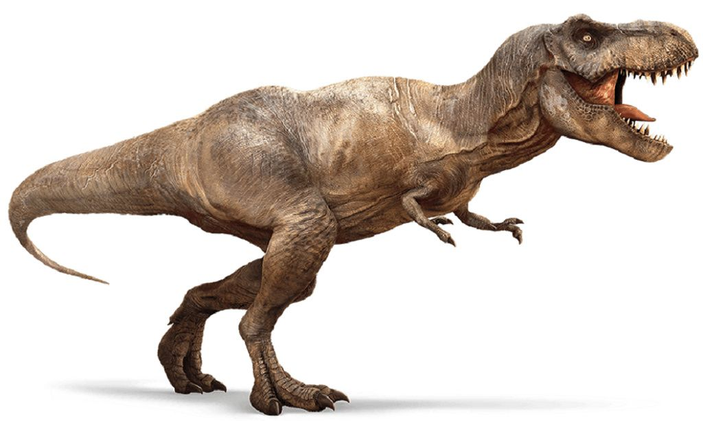
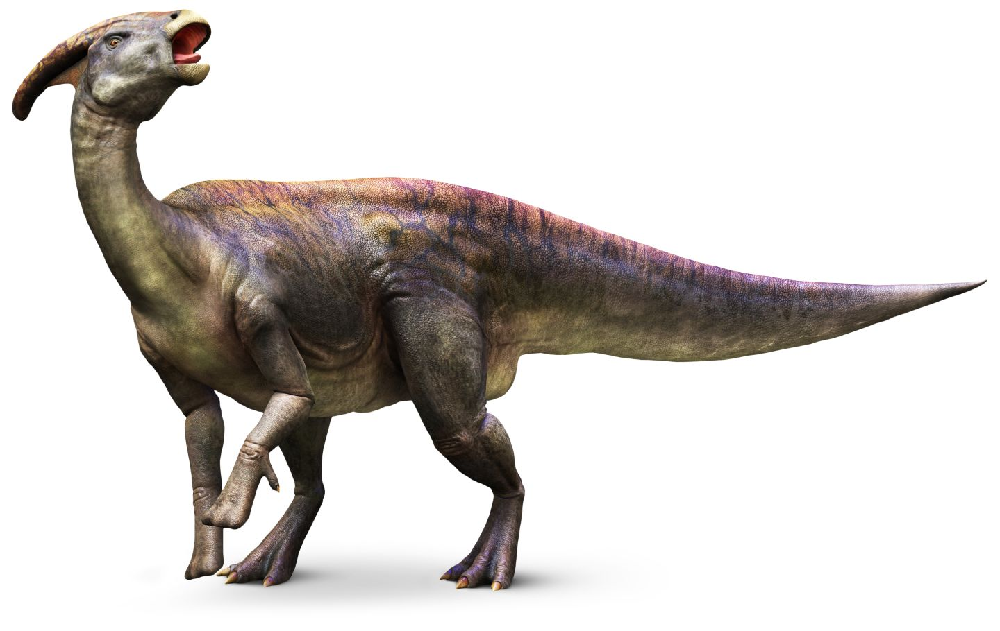

Tres dinosaurios sorprendentes

Triceratops
Triceratops, o el tricerátops, es un género de dinosaurios ceratopsianos ceratópsidos, que vivieron a finales del período Cretácico, hace aproximadamente 68 y 66 millones de años, en el Maastrichtiense, en lo que hoy es Norteamérica.
Tyrannosaurus rex
es la única especie conocida del género fósil Tyrannosaurus de dinosaurio terópodo tiranosáurido, que vivió a finales del período Cretácico, hace aproximadamente entre 68 y 66 millones de años


PARASAUROLOPHUS
Genero de dinosaurios ornitopodos hadrosauridos ,que vivió a finales del periodo cretacico hace 70 y 85 millones de años , en el campaniano , que el día de hoy es Norteamérica.